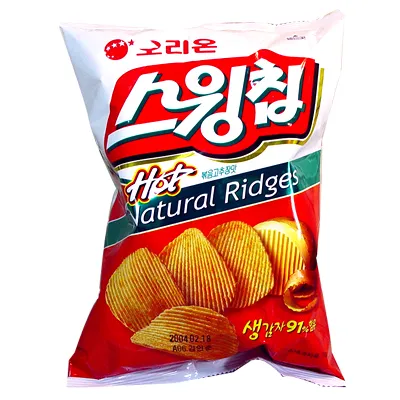

오리온에서 1994년부터 내고 있는 감자칩 중 하나. 출시 초기에는 당시 보통 과자들이 3백원, 5백원 정도면 살 수 있을 때 천원으로 상당히 비싼 과자였다. 감자칩 과자들이 다 그렇듯 포카칩과 더불어 질소과자를 대표하는 얼굴 마담이다.
2014년~2015년까지 일시적으로 개편되었던 적이 있었다. 일단 상당히 두꺼워졌고, 종류도 볶음 고추장맛과 오리지널 두 개로 줄어들었다. 더 두꺼워져서 좋아하는 사람이 있는 반면 더 이상 옛날의 스윙칩이 아니라며 분통을 터트리는 사람도 있을 정도로 호불호가 극심하게 갈리는 편이며, 오리지널에 대한 평은 좋지 않았고 특유의 질소 과다 함유 문제는 해결되지 않았다.